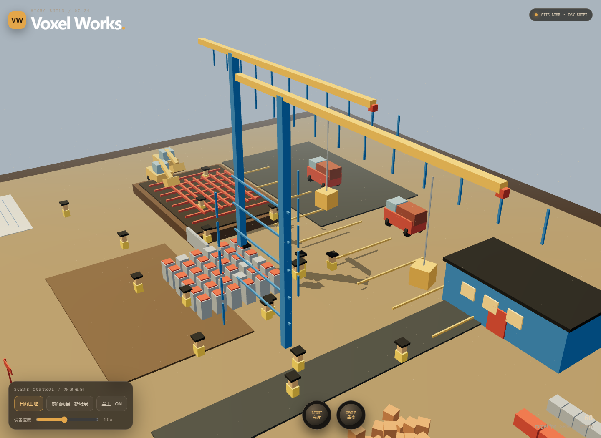

体素微缩建筑工地
原始提示词
见 完整原始输入。
运行与复盘
这是一个单 HTML 的体素工地沙盘。场景使用代码生成几何体、颜色和灯光，包含基坑、塔楼基座、钢筋棚、板房、道路、塔吊、挖掘机、卡车、工人、尘土和工作台道具；点击“夜间雨暴”会切换到新增的夜间施工场景。
入口为 index.html。Three.js r160 使用 CDN，场景材质和贴图不依赖外部图片；鼠标拖拽、滚轮、空格和前景旋钮可控制视角、天气、灯光及设备速度。
预览截图

<!-- archive:start -->
当前归档信息（自动生成）
- 实验 ID：
voxel-construction-site--gpt-5-6-luna-max-r01 - 模型：GPT-5.6 Luna；推理档位：max
- 类型：single-html；预览：static；网络：required
- 完整原始输入快照 · 主题与其他版本
- 输入记录：完整输入记录为提示词 v1 原文；未附加系统提示、图片或多轮输入。
- 工具：Codex。按用户指定记录模型 gpt-5.6-luna 与 max 档位；所有场景纹理和道具均由代码生成，Three.js 库使用 CDN。
- 运行方式：浏览器直接打开本目录入口；CDN/外部素材需要联网。
- 费用记录：OpenAI · ChatGPT Plus 订阅；单案例货币金额未记录。据用户说明，OpenAI 模型通过 ChatGPT Plus 订阅测试；全部案例完成后，五小时额度未耗尽。未提供单案例费用金额。
- 体素工地沙盘
部署适配记录
- 首次实现，不覆盖基线提示词或既有实验。
- 增加主工地与夜间雨暴双场景，使用同一控制栏切换，避免两个 WebGL 场景同时占用资源。
- 机械运动限定在道路与作业区边界内，采用实例化体素部件减少重复网格。 <!-- archive:end -->